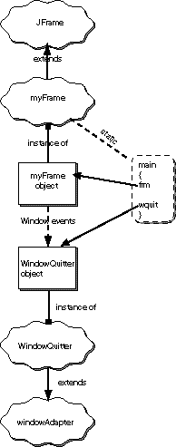

QUESTION 16:

Are you beginning to wish that GUI programming had never been invented?
Yes—this might look odd, but it works.
Since main() is static, the Java system has only
one copy of it at a time.
The new myFrame object will not have another copy of main().
|  |
It helps to look at the steps in order:
main() method starts running.
main() is part of the bytecodes that the
compiler produced. It exists and is available to run when you
start the program.main() method asks for a myFrame object to be created
and puts a reference to it in a variable.
main() is static, this will not
make a second copy of main()The picture of this program is nearly the same as for the previous version, except now the "static part" belongs to the myFrame class.
Compare this with the picture for the previous version of the program to see how things fit together. The two programs behave in exactly the same way. Which way you organize your program is up to you. A big program with many frames will probably use the first method; a small program will probably use the second method.
Are you beginning to wish that GUI programming had never been invented?